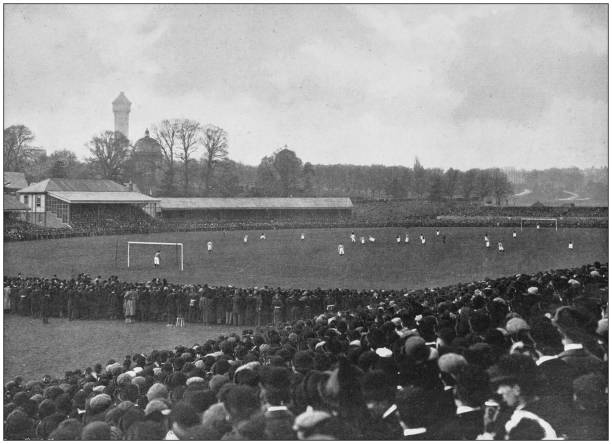

Historia del Fútbol en Inglaterra
El fútbol tiene una historia muy larga y emocionante en Inglaterra. Se cree que juegos de pelota parecidos se jugaban hace muchos siglos. El fútbol moderno como lo conocemos empezó a tomar forma en las escuelas públicas inglesas durante el siglo XIX. En 1863, se creó la Football Association (FA), que estableció reglas一 para el juego. La primera liga de fútbol del mundo, The Football League, se fundó en Inglaterra en 1888. ¡Inglaterra también fue uno de los países que ayudaron a crear la FIFA en 1904!
Principales Competiciones
- Premier League: La liga de fútbol más importante de Inglaterra, donde los mejores equipos compiten cada año.
- FA Cup: Una copa muy antigua y emocionante en la que participan equipos de todas las ligas de Inglaterra.
- EFL Cup (Carabao Cup): Otra copa importante que se juega en Inglaterra.
Los Mejores Equipos
Aquí hay algunos de los equipos más exitosos y populares del fútbol inglés:
- Manchester United
- Liverpool
- Arsenal
- Chelsea
- Manchester City

Jugadores Estrella
Inglaterra ha tenido y tiene muchos jugadores increíbles. Algunos ejemplos son:
- Alan Shearer
- Wayne Rooney
- Steven Gerrard
- Harry Kane
- Muchos más... ¡hay muchísimos!
Equipos con Más Trofeos
Estos son algunos de los equipos que han ganado más trofeos importantes en el fútbol inglés:
- Manchester United
- Liverpool